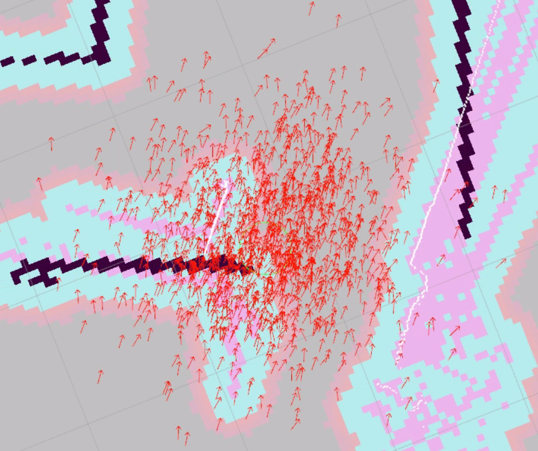
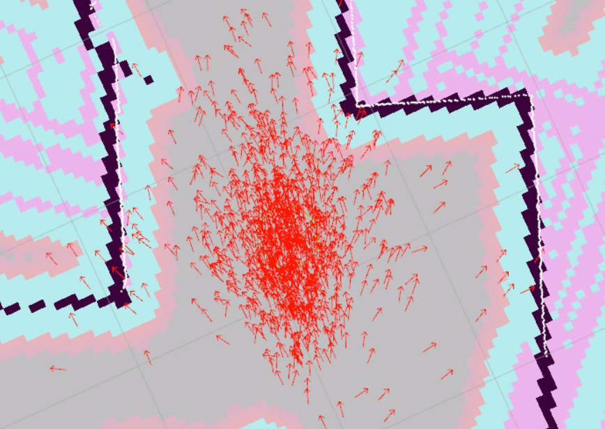

Nav2 Setup¶
Once a localization or SLAM node is providing the robot’s pose, you can add the Nav2 navigation stack to enable point‑and‑click autonomous navigation using the 2D Goal Pose tool in RViz2.
How It Works¶
The 2D Goal Pose button in RViz2 publishes a geometry_msgs/PoseStamped message to the /goal_pose topic. Nav2’s BT Navigator subscribes to this topic, plans a path using the Planner Server, and drives the car to the goal using the Controller Server.
Nav2 Component |
Role |
|---|---|
|
Localizes the car on the map (Monte Carlo localization) |
|
Global path planning (A* / NavFn) |
|
Local path following — publishes |
|
Subscribes to |
|
Converts |
|
Manages the lifecycle of all Nav2 nodes |
What is AMCL?¶
AMCL (Adaptive Monte Carlo Localization) is a particle filter that answers the question: “Where am I on this map?”
It works by maintaining a cloud of particles — hundreds of guesses of where the robot might be on the map. Each particle represents a possible pose (x, y, heading). On every laser scan, AMCL compares what the LiDAR actually sees against what it would see from each particle’s position on the saved map. Particles that match well survive; particles that don’t are discarded and replaced. Over time, the cloud converges around the robot’s true position.
AMCL publishes the map → odom TF transform, which is how the rest of Nav2 knows the robot’s position on the map. Without AMCL, the map frame does not exist and navigation cannot work.
Why do I need to set a 2D Pose Estimate? AMCL needs a starting guess. When Nav2 first launches, the particles are not initialized — AMCL doesn’t know where to start looking. Clicking 2D Pose Estimate in RViz2 gives AMCL an approximate starting position, and it spreads the initial particle cloud around that point. As the robot moves, the cloud narrows and localization becomes accurate.
Note
You can visualize the particle cloud in RViz2 by adding a ParticleCloud display (under nav2_rviz_plugins) on the /particle_cloud topic. A spread-out cloud means AMCL is still converging; a tight cluster means it is confident.




Note
Command pipeline: Nav2’s controller publishes Twist on /cmd_vel. The cmd_vel_to_ackermann node converts this to AckermannDriveStamped on /drive. The ackermann mux forwards /drive to the VESC, which drives the wheels.
controller_server → /cmd_vel (Twist) → cmd_vel_to_ackermann → /drive (AckermannDriveStamped) → ackermann_mux (priority 10) → VESC
Note
The default global planner plugin used by planner_server is
nav2_navfn_planner. It implements the classic A* search algorithm
(often referred to as NavFn in ROS literature) on the occupancy grid
(a.k.a. costmap) to compute a low‑cost path from the current pose to the
goal pose. A* is optimal and complete when the heuristic is admissible, and
it expands nodes in order of increasing f = g + h. NavFn is simply the
A* implementation tuned for navigation maps; you can swap in alternate
planners (e.g. SMAC) by changing the plugin in your Nav2 parameters.
For the purposes of the tutorial you can treat the planner as a “black box” that returns a sequence of waypoints—the important part is that the controller server follows whatever path it provides.
Prerequisites¶
Before starting, make sure you have:
A saved map — completed the SLAM tutorial with
lab_map.pgmandlab_map.yamlin~/f1tenth_ws/src/f1tenth_system/f1tenth_stack/maps/Nav2 installed — completed the SETUP - Nav2 setup
Workspace rebuilt after saving the map — Nav2 reads map files from the install directory, not the source directory. If you haven’t rebuilt since saving your map, run:
cd ~/f1tenth_ws colcon build --packages-select f1tenth_stack source install/setup.bash
Steps¶
1️⃣ Start Bringup (Terminal 1)¶
Make sure the PlayStation controller is connected to the car, then open a terminal on the robot and run:
bringup
This calls ros2 launch f1tenth_stack bringup_launch.py, which starts the car’s sensors and drivers.
Note
If Nav2 later reports Timed out waiting for transform from base_link to odom, the PlayStation controller is likely not connected. The VESC driver requires the joystick to fully initialize, and without it the odom frame is never published.
Warning
Hold R1 for autonomous mode. By default the joystick continuously publishes zero-speed commands at high priority, blocking Nav2. Hold R1 (button 5) on the PlayStation controller to enable autonomous mode — this lets Nav2’s drive commands through. Releasing R1 returns to manual joystick control.
Leave this terminal running.
2️⃣ Launch Nav2 (Terminal 2)¶
Open a new terminal and source the workspace:
cd ~/f1tenth_ws
source /opt/ros/humble/setup.bash
source install/setup.bash
Launch the full Nav2 stack (AMCL + map server + navigation). If you saved your map as lab_map, you can use the default:
ros2 launch f1tenth_stack nav2_launch.py
To load a different map, pass the map_name argument:
ros2 launch f1tenth_stack nav2_launch.py map_name:=hallway_map
Change hallway_map to match the name you used when saving your map (without the file extension).
This launches the full Nav2 stack:
map_server — loads your saved map and publishes the occupancy grid
AMCL — localizes the car on the map using a particle filter (publishes the
map→odomTF)planner_server — computes a global path from the car to the goal (A*)
controller_server — follows the planned path by publishing velocity commands
behavior_server — handles recovery behaviors (spin, backup, wait) when the car gets stuck
bt_navigator — the behavior tree that orchestrates planning, control, and recovery into a complete navigation loop
cmd_vel_to_ackermann — converts Nav2’s
/cmd_vel(Twist) to/drive(AckermannDriveStamped) for the F1TENTH
Note
Shutting down Nav2: The Nav2 component container ignores repeated Ctrl+C (SIGINT). If Nav2 does not stop after pressing Ctrl+C, use Ctrl+\ (SIGQUIT) instead.
Note
If map_server fails with Failed processing YAML file ... for reason: bad file, the map file in the install directory is empty or corrupted. Check the source file:
cat ~/f1tenth_ws/src/f1tenth_system/f1tenth_stack/maps/lab_map.yaml
If the file has valid content, rebuild with colcon build --packages-select f1tenth_stack and relaunch. If the file is empty or missing, go back to the SLAM tutorial and save the map again, then rebuild.
Leave this terminal running.
3️⃣ Verify Nav2 is Running (Terminal 3)¶
Open a third terminal and check that the Nav2 lifecycle nodes are active:
ros2 node list
You should see these Nav2 nodes:
Node |
Role |
|---|---|
|
Loads and publishes the occupancy grid map |
|
Localizes the car on the map (Monte Carlo localization) |
|
Computes a global path from the car’s pose to the goal (A*) |
|
Follows the planned path by sending velocity commands to the car |
|
Orchestrates planning and control via a behavior tree |
Confirm the planner is ready by checking for the /plan topic:
ros2 topic list | grep plan